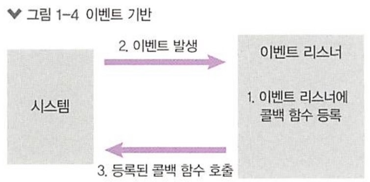
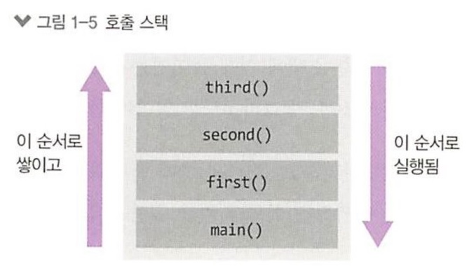
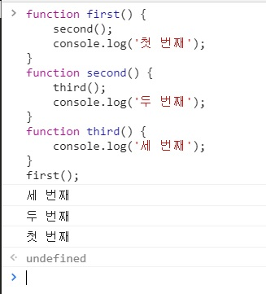
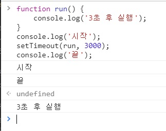
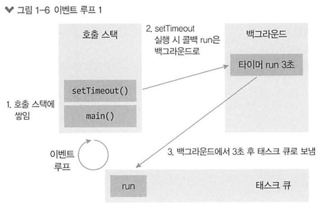
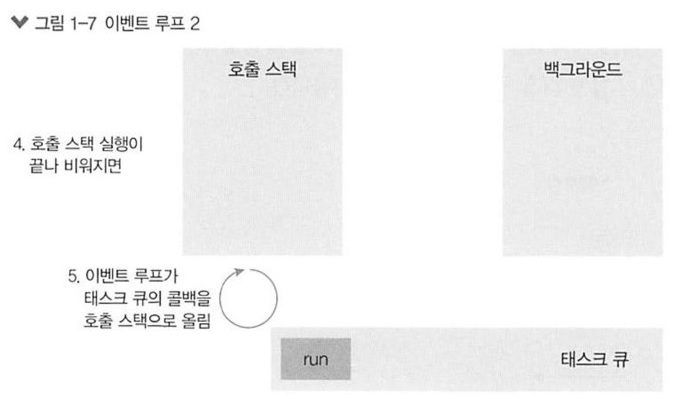
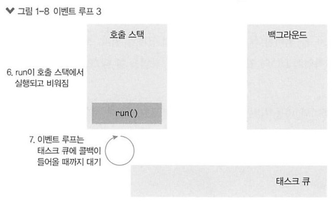

이벤트 기반(event-driven)이란 이벤트가 발생할 때 미리 지정해둔 작업을 수행하는 방식을 의미합니다.
이벤트로는 클릭이나 네트워크 요청 등이 있을 수 있습니다.
이벤트 기반 시스템에서는 특정 이벤트가 발생할 때 무엇을 할지 미리 등록해두어야 합니다.
이것을 이벤트 리스너(event listener)에 콜백(callback) 함수로 등록한다고 표현합니다.
버튼을 누르면 경고 창을 띄우도록 설정하는 것을 예로 들어 보겠습니다.
클릭 이벤트 리스터에 경고 창을 띄우는 콜백함수를 등록해두면 클릭 이벤트가 발생할 때마다 콜백 함수가 실행돼
경고 창이 뜨는 것입니다.
노드도 이벤트 기반 방식으로 동작하므로 이벤트가 발생하면 이벤트 리스너에 등록해둔 콜백 함수를 호출합니다.
발생한 이벤트가 없거나 발생했던 이벤트를 다 처리하면 노드는 다음 이벤트가 발생할 때까지 대기합니다.

이벤트 기반 모델에서는 이벤트 루프라는 개념이 등장합니다.
여러 이벤트가 동시에 발생했을 때 어떤 순서로 콜백 함수를 호출할지를 이벤트 루프가 판단합니다.
노드와 자바스크립트에서 이벤트 루프는 정말 중요한 개념입니다.
노드는 자바스크립트 코드에서 맨 위부터 한 줄씩 실행합니다.
함수 호출 부분을 발견했다면 호출한 함수를 호출 스택에 넣습니다.
다음 코드가 콘솔에 어떤 로그를 남길지 예측해 보십시오.
function first() {
second();
console.log('첫 번째');
}
function second() {
third();
console.log('두 번째');
}
function third() {
console.log('세 번째');
}
first();

위 그림에서 main 함수는 처음 실행 시의 전역 컨텍스트를 의미합니다.
컨텍스트는 함수가 호출되었을 때 생성되는 환경을 의미합니다.
자바스크립트는 실행 시 기본적으로 전역 컨텍스트 안에서 돌아간다고 생각하는 게 좋습니다.
함수의 실행이 완료되면 호출 스택에서 지워집니다.
third, second, first, main 순으로 지워지고, main 함수까지 실행이 모두 완료되었다면 호출 스택은 비어있게 됩니다.
콘솔의 출력 결과는 다음과 같습니다.

이번에는 특정 밀리초(1000분의 1초) 이후에 코드를 실행하는 setTimeout을 사용하겠습니다.
콘솔에 어떤 로그가 기록될지 예측해보십시오.
function run() {
console.log('3초 후 실행');
}
console.log('시작');
setTimeout(run, 3000);
console.log('끝');

3초 뒤에 run 함수를 실행하는 코드입니다.
콘솔 결과는 쉽게 예측할 수 있지만, 호출 스택으로 설명하기는 힘듭니다.
setTimeout 함수의 콜백인 run이 호출 스택에 언제 들어가는지 알기 어렵기 때문입니다.
이를 파악하기 위해서는 이벤트 루프, 테스크 큐, 백그라운드를 알아야 합니다.
- 이벤트 루프
-
이벤트 발생 시 호출할 콜백 함수들을 관리하고, 호출된 콜백 함수의 실행 순서를 결정하는 역할을 담당합니다.
노드가 종료될 때까지 이벤트 처리를 위한 작업을 반복하므로 루프라고 불립니다.
- 테스트 큐
-
이벤트 발생 후 호출되어야 할 콜백 함수들이 기다리는 공간입니다.
콜백들이 이벤트 루프가 정한 순서대로 줄을 서 있으므로 콜백 큐라고도 부릅니다.
- 백그라운드
-
타이머(setTimeout)나 I/O 작업 콜백 또는 이벤트 리스너들이 대기하는 곳입니다.



만약 호출 스택에 함수들이 너무 많이 차 있으면 3초가 지난 후에도 run 함수가 실행되지 않을 수 있습니다.
이벤트 루프는 호출 스택이 비어 있을 때만 태스크 큐에 있는 run 함수를 호출 스택으로 가져오기 때문입니다.
이것이 setTimeout의 시간이 정확하지 않을 수도 있는 이유입니다.
이런 이벤트 루프를 사용하기 때문에 오래 걸리는 작업을 효율적으로 처리할 수 있습니다.
오래 걸리는 함수를 백그라운드로 보내서 다음 코드가 먼저 실행되게 하고,
그 함수가 다시 테스크 큐를 거쳐 호출 스택으로 올라오기를 기다리는 방식입니다.
이러한 방식이 다음에 볼 논블로킹(비동기) I/O 방식입니다.